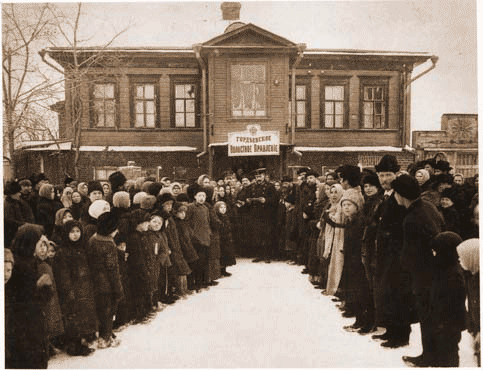

Statistical analysis of data

In front of a Township Administration Building, Nizhegorodskii province, early twentieth century.
From the collection of Mikhail Zolotarev.
The displays in this section present statistical analyses of data concerning litigants' qualities and judges' decisions. The calculations are based on variables in the
Case Data set.
The following tables present the results concerning the major factors that contributed to the decisions made by the judges. The factor that contributed most strongly to the resolution of the case in favor of the plaintiff was the testimony of the defendant. When the defendant admitted guilt in a criminal case, or agreed with the plaintiff’s demands in a civil case, the judgment was almost certain to be in favor of the plaintiff. When the defendant disagreed with the plaintiff, the plaintiff on average won only 40% of the time.
The second most important factor was the testimony of the witnesses. The more witnesses in favor of the plaintiff were involved in the case, the more likely was the plaintiff to win. Two other factors that seemed to matter for the outcome were the family relationship between the litigants and the type of the case. Although statistical significance of these findings is lower, the tendency was that plaintiffs suing their family members were less likely to win than the plaintiffs suing defendants that were not related to them by kin. Also, plaintiffs in the civil cases were on average more likely to win than the plaintiffs in the criminal cases.
Another finding is the seeming lack of discrimination based on gender or literacy of the parties. Being illiterate or being a female does not seem to hurt (or help) the plaintiff’s case. Presence or absence of documentary evidence did not have a statistically significant effect on the plaintiffs’ success rates or on the evaluation of other evidence (testimony of the defendant and those of the witnesses). The tendency of documents to enhance other kinds of testimony is visible in whole case records where documents are cited in verdicts.
Statistical evaluation of the role of documents in decisions is complicated by the fact that the dataset does not indicate which side presented the document or which party’s case a document supported. The calculations below suggest only that the weight judges attached to oral testimony was slightly less (not statistically significant) in the presence of documentary evidence. Both the role of documents and the significance of the difference of outcomes between family and non-family cases are subjects for further study.
For interpretation of the material presented here, consult
RUSSIAN PEASANTS GO TO COURT. The qualities of peasant jurisprudence are the focus of Chapter 6. Gender, literacy and residence of litigants are discussed in other chapters as well.
The material in this section was prepared by Natalia Zharinova. I am deeply grateful to Natalia for her meticulous concern for my painstakingly gathered but never perfect data, her enthusiasm for this project, and her expertise in statistics, law, and political science.
Documents
© 2004 Jane Burbank, New York University
with permission from Indiana University Press